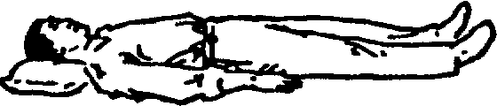
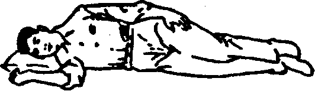

300 вопросов о цигун. Секреты китайской медицины. Содержание
Во время выполнения многих упражнений цигуна нужно принимать положение лежа. Это может быть позиция "лежа на спине" и позиция "лежа на боку".
Позиция "лежа на спине". Лечь на кровати на спину. Голова в естественном прямом положении, подушка подобрана по высоте. Рот и глаза слегка прикрыты. Ноги вытянуты в естественном положении, руки вытянуты вдоль тела (рис. 1).

Позиция "лежа на боку". Лечь на кровати на любой бок; обычно используется позиция на правом боку. Голова слегка наклонена вперед, ровно лежит на подушке, рот и глаза слегка прикрыты. Нижняя рука согнута в естественном положении, лежит на подушке, открытой ладонью вверх на расстоянии примерно 6-7 см от головы. Нижняя нога вытянута в естественном положении, верхняя нога слегка согнута, примерно под углом 120°, лежит на нижней ноге. Верхняя рука лежит на корпусе. Тело также слегка согнуто в форме лука, голова слегка наклонена к груди; позиция должна быть удобной и естественной (рис. 2).

При выполнении упражнений лежа можно применять соответствующие способы концентрации и регулирования дыхания.
300 вопросов о цигун. Секреты китайской медицины. Содержание